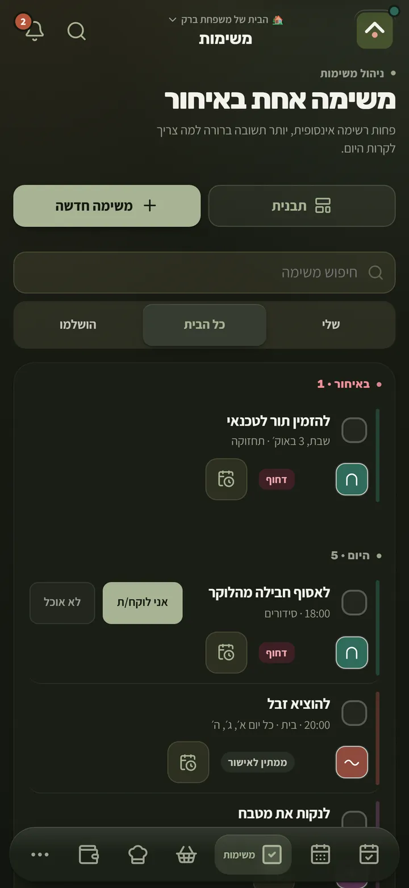
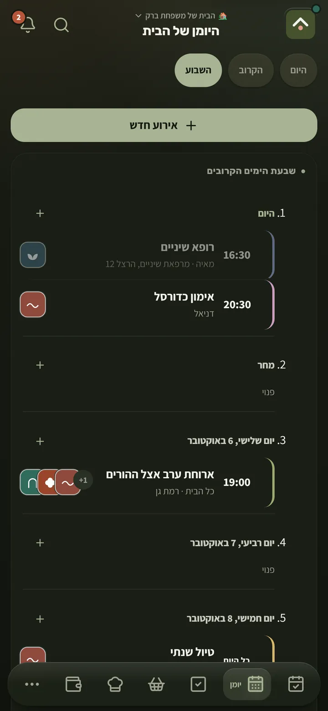
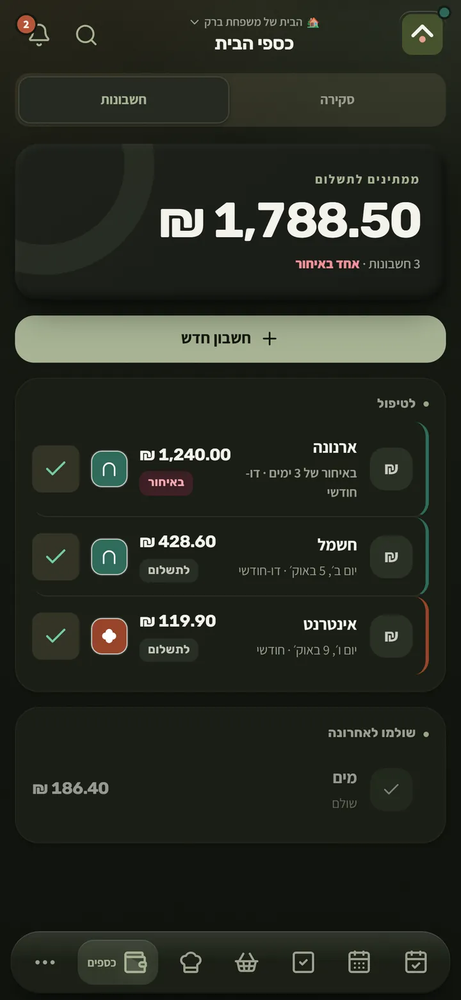
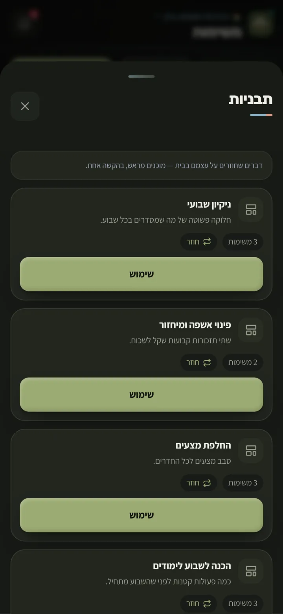
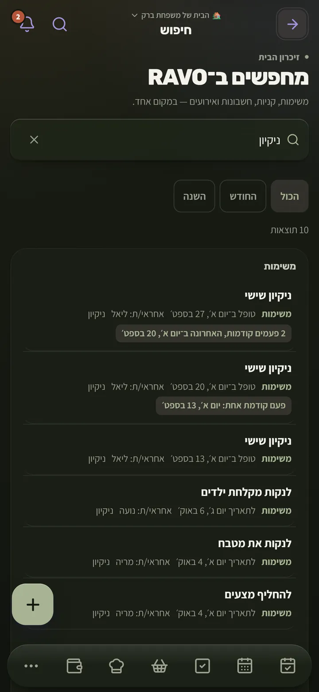
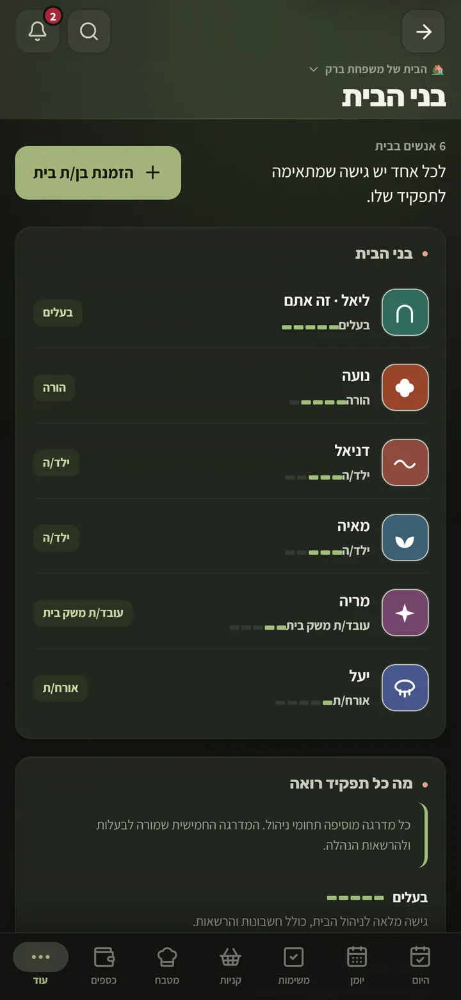
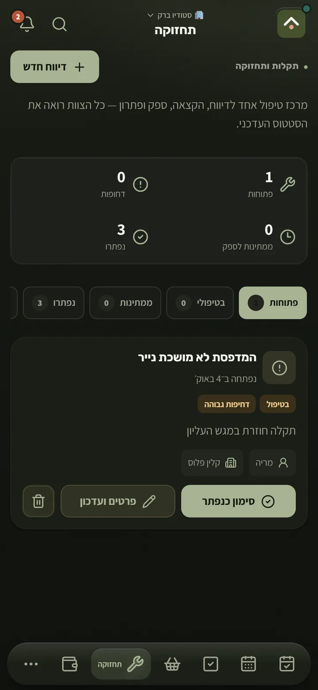

״מי היה אמור לעשות את זה?״
אין תמונה משותפתזמינה עכשיו ב־App Store
פחות לנהל
אחד את השני.
יותר לחיות ביחד.
RAVO מראה קודם מה חשוב עכשיו, ואז מחברת משימות, קניות, יומן, חשבונות, מטבח וזיכרון משותף — בבית וגם במשרד.
חינם · עברית ואנגלית · iPhone

העומס שלא רואים
בית שלם לא אמור לשבת
בראש של אדם אחד.
מי קובע את התור, מה נגמר במזווה, איזה חשבון מחכה ומי הבטיח לטפל. כשהמידע מפוזר בין ראשים, צ׳אטים ופתקים — אדם אחד הופך בלי שהתכוון למנהל הבית.
הרשימה נשארה בין שלוש שיחות.
המידע מפוזרשוב צריך להזכיר. ושוב.
הזיכרון של אדם אחדRAVO מחזירה את התמונה לכולם.
מקום אחד, משותףנסו בעצמכם
זה המוצר.
תיגעו בו.
בחרו חלק מ־RAVO והמסך יעבור לשם. כל תמונה כאן היא צילום מהאפליקציה עצמה — לא הדמיה ולא ציור.
מה שדורש תשומת לב עכשיו
RAVO אוספת מכל האזורים את מה שדחוף, מה שמתקרב ומי כבר לקח אחריות — ומציגה את זה קודם.
אחראי, מועד וחזרתיות
משימה יוצאת מהראש ומקבלת בעלים ברור. אפשר למסור אותה, והמסירה מקבלת תשובה במקום להיעלם.
רשימה אחת, מסודרת כמו הסופר
כל פריט נוחת במחלקה הנכונה. מצב קניות מוביל בין המחלקות ומתעדכן אצל כולם בזמן אמת.
מחר לא מפתיע אף אחד
תורים, חוגים ואירועים של כל בני הבית ביומן משותף אחד, במקום בארבעה ראשים.
מה יוצא, מתי, ומי טיפל
חשבונות הבית עם מועד ומצב תשלום. נתוני כסף נשארים סגורים לתפקידים שאין להם גישה.
מה שחוזר, מוגדר פעם אחת
ניקיון שבועי, פינוי אשפה, הכנה לשבוע — תבנית אחת פותחת מחדש את כל המשימות שבה.
תפקידים והרשאות
לכל אחד תפקיד: בעלים, הורה, ילד/ה, עובד/ת או אורח/ת. ההרשאות נאכפות בשרת, לא רק במסך.
מתי טיפלנו בזה בפעם הקודמת?
חיפוש אחד על פני משימות, קניות, חשבונות ואירועים — כולל מה שכבר נסגר לפני חודשים.
יום אחד. מקום אחד.
מהבוקר ועד
שהבית נרגע.
גללו דרך יום אמיתי ב־RAVO. כל מסך כאן צולם מהמוצר עצמו, בלי ציור מחדש.
היום מתחיל בתמונה ברורה.
מה דחוף, מה מתקרב ומי כבר לקח אחריות — בלי לפתוח חמש רשימות ובלי לשאול.
אחריות עוברת מהראש למרחב.
משימה מקבלת אחראי, מועד וחזרתיות — ואפשר למסור אותה ולקבל תשובה ברורה. אף אחד לא צריך לזכור או לרדוף בשביל כולם.

הרשימה כבר מסודרת כמו הסופר.
כל פריט נכנס למחלקה הנכונה. מצב קניות מוביל בין המחלקות, נשאר מעודכן בזמן אמת ומראה מה עוד נשאר.

מחר כבר לא מפתיע אף אחד.
תורים, חוגים, אירועים ותוכניות של הבית נמצאים ביומן משותף אחד.

חשבונות בלי ערפל.
מה מחכה לתשלום, מי מטפל ומה כבר שולם. תיאום ביתי — לא שירות בנקאי.

מה שחוזר, כבר מוכן.
שגרות ותבניות מחזירות לשבוע הבא את מה שלא צריך להמציא מחדש בכל פעם.

מתי טיפלנו בזה בפעם הקודמת?
חיפוש אחד עובר על משימות, קניות, חשבונות ואירועים ביחד — ולכל תוצאה אומר מתי זה קרה בפעם הקודמת.

היוםRAVO HOME
אחריות משותפת, באמת
מהראש של אחד
לבית של כולם.
אצלי בראש
- להזמין תור לטכנאי
- להוסיף קפה לרשימה
- לשלם חשבון מים
בבית
הבית של משפחת ברקמה קורה היום
נלמ
נשמר. עכשיו כולם יודעים.
הדגמה בדפדפן בלבד — לא נשמר שום מידע.
RAVO לא מחלקת ציונים ולא מנהלת אנשים. היא נותנת לבית הקשר משותף: מה צריך לקרות, מי מטפל, ומה כבר מאחורינו.
לכידה מהירה
כותבים משפט.
RAVO מבינה אותו.
במקום למלא טופס, כותבים בעברית כמו שחושבים. RAVO מזהה את התאריך, השעה והסכום, ומציעה לאן זה שייך — ואתם מאשרים.
ההבנה החופשית בנויה לעברית. באנגלית RAVO קוראת את התאריך והשעה ומבקשת מכם לבחור לאן זה הולך.
הוספה מהירה
הדגמה בדפדפן בלבד — לא נשלח שום מידע.
כל מה שמחזיק את הבית
מערכת אחת.
פחות קצוות פתוחים.
לא עוד אוסף כלים שלא מדברים זה עם זה. RAVO מחברת את היום, האנשים וההיסטוריה סביב אותו מרחב — בלי להעמיס עוד מערכת.
המטבח מדבר עם הרשימה.
ארוחות ומזווה חיים יחד, כך שרואים מה כבר יש בבית ומה חסר לקנייה.
לכל אחד יש מקום.
תפקידים והרשאות מראים לכל אחד רק את מה שנכון לו. אפשר לבחור סימן, צבע או תמונת פרופיל פרטית לחברי המרחב.

לא משאירים אתכם להבין לבד.
הדרכה קצרה מופיעה כשצריך, ומרכז העזרה מאפשר לחזור לכל מדריך — מהיום והמשימות ועד תמונת הפרופיל.
- 01רואים מה חשוב
- 02עושים פעולה אחת
- 03חוזרים כשרוצים
 RAVO OFFICE
RAVO OFFICE
אותו סדר.
גם במקום העבודה.
אותה מערכת, מותאמת למרחב משותף אחר. לצוותים קטנים שרוצים לראות מה דורש טיפול — בלי להכניס מערכת כבדה.
אותו חשבון יכול להשתייך לבית ולמשרד במקביל. עוברים ביניהם בלי לערבב מידע, תפקידים או הרשאות.


פרטיות בלי דרמה
הבית שלכם הוא
לא מוצר פרסום.
מרחבים נפרדים
הגישה מבוססת חשבון, חברות והרשאות נפרדות. הבית והמשרד יכולים לחיות באותו חשבון — בלי שמידע זולג ביניהם.
בלי כלכלת תשומת לב
אין פרסומות, אין מכירת מידע אישי ואין עוגיות מעקב של צד שלישי באתר הזה.
שליטה בזהות ובחשבון
תמונת הפרופיל פרטית לחברי המרחב, מחיקת חשבון זמינה מתוך המוצר וההרשאות נאכפות במסד הנתונים.
שאלות נפוצות
לפני שמתחילים.
מה זה RAVO?
מערכת הפעלה משותפת לבית: מקום אחד למשימות, קניות, יומן, חשבונות, מטבח ושגרות, שכל בני הבית רואים.
למי זה מתאים?
לבתים שרוצים פחות עומס סמוי ופחות תיאומים מפוזרים. יש גם RAVO Office לצוותים ומשרדים קטנים.
האם כולם בבית צריכים להשתמש?
הערך גדל כשבני הבית משתתפים, אבל לכל אחד אפשר להגדיר תפקיד והרשאות שמתאימים לו — כולל ילדים.
אפשר להיות גם בבית וגם במשרד?
כן. אותו חשבון יכול להשתייך לכמה מרחבים ולעבור ביניהם, עם מידע, תפקיד והרשאות נפרדים בכל בית או משרד.
איך לומדים להשתמש בכל המסכים?
בפעם הראשונה מופיעה הדרכה קצרה שמתאימה למסך ולתפקיד שלכם. אפשר לפתוח שוב את כל המדריכים בכל רגע דרך מרכז העזרה.
באיזו שפה זה עובד?
הממשק זמין בעברית ובאנגלית. ההבנה של טקסט חופשי בהוספה מהירה בנויה לעברית; באנגלית נקראים התאריך והשעה ואתם בוחרים לאן זה הולך.
האם המידע שלי פרטי?
הגישה פרטית ומבוססת חשבון. אין מכירת מידע ואין פרסום ממוקד. הפרטים המלאים במדיניות הפרטיות.
כמה זה עולה?
RAVO זמינה ב־App Store לאייפון, בחינם. אין רכישות בתוך האפליקציה, אין מנוי פעיל ואין פרסומות.
RAVO
הבית מסתדר.
אתם נושמים.
הורידו את RAVO, פתחו בית, והזמינו את מי ששייך אליו.
חינם · בלי רכישות בתוך האפליקציה · בלי פרסומות